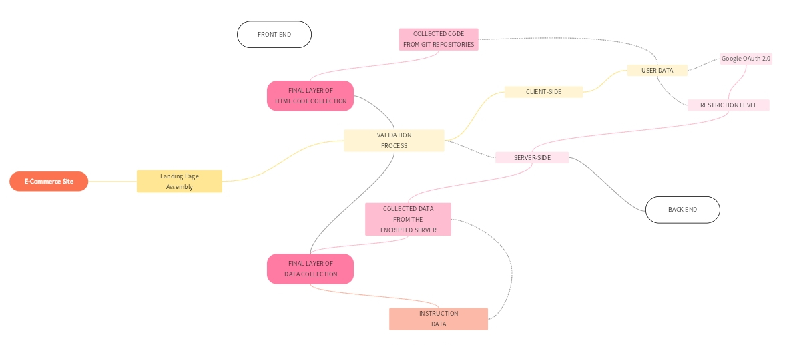

Figure 1: eCommerce Landing Page Framework Architecture
Pioneering a Landing Page Assembly Framework for eCommerce site
This project aims to develop a robust framework for constructing high-performing eCommerce landing pages.
By combining a visual builder, a comprehensive component library, and intelligent data management, we will create a platform that accelerates development while maintaining quality standards.
The framework will incorporate features such as real-time validation, performance optimization, and accessibility compliance to ensure optimal user experiences.
This foundation will support the creation of a versatile product line, including pre-built templates, A/B testing tools, and analytics integration.
By prioritizing innovation and user-centric design, we aim to establish a leading position in the eCommerce website development market.

Figure 1: Service architecture
Proposed Architecture for eCommerce Framework with Cloud-Based Architecture
To realize the vision of our eCommerce landing page framework, we propose a cloud-native, 2-tier architecture on Google Cloud Platform (GCP).
The frontend, constructed with a contemporary framework such as React or Angular, will be deployed as a serverless application on Cloud Run.
This strategic choice guarantees automatic scaling to accommodate fluctuating traffic, optimizing resource utilization.
Backend services, encompassing APIs, robust data validation, and core business logic, will also be hosted on Cloud Run for seamless integration and scalability.
To ensure flexibility and real-time data synchronization, Cloud Firestore will be employed as the primary database.
Infrastructure provisioning and management will be streamlined through Terraform, enabling infrastructure as code principles.
Cloud Build will serve as the automation backbone, orchestrating the continuous delivery pipeline for efficient and reliable deployments.
Security and compliance are paramount, thus IAM and Secret Manager will be leveraged for granular access control and secure storage of sensitive information.
To facilitate asynchronous communication between services and enhance system responsiveness, Pub/Sub can be integrated.
This architectural blueprint is aligned with the framework's core objectives.
By capitalizing on the serverless capabilities of Cloud Run and the flexibility of Cloud Firestore,
we establish a foundation for high-performance, scalable, and secure eCommerce landing pages.